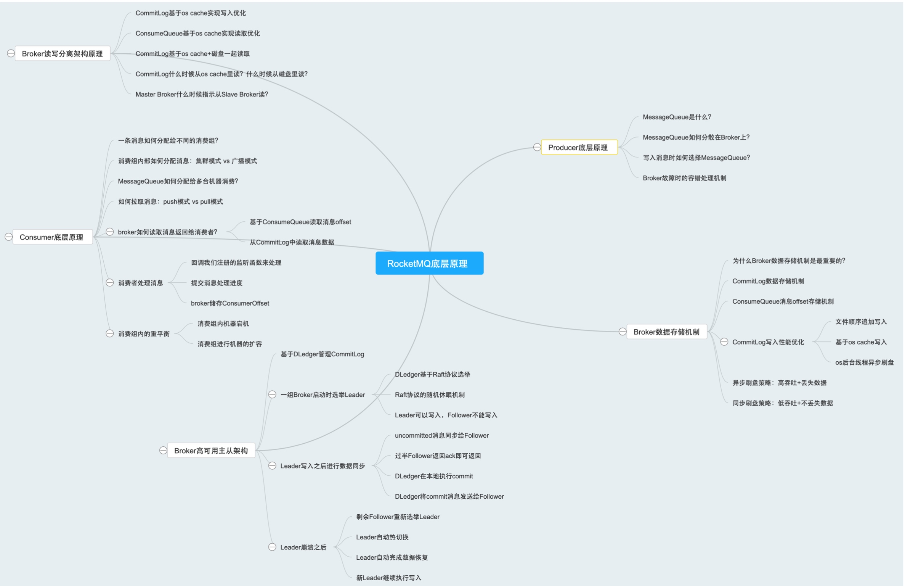

思维导图

问题归类
- () Kafka、RabbitMQ 他们有类似的数据分片机制吗？他们是如何把一个逻辑上的数据集合概念（比如一个 Topic）给在物理上拆分为多个数据分片的？然后拆分后的多个数据分片又是如何在物理的多台机器上分布式存储的？
(2) 为什么一定要让 MQ 实现数据分片的机制？如果不实现数据分片机制，让你来设计 MQ 中一个数据集合的分布式存储，你觉得好设计吗？
(3) 同步刷盘和异步刷盘两种策略，分别适用于什么不同的场景呢？
(④）异步刷盘可以提供超高的写入吞吐量，但是有丢失数据的风险，这个适用于什么业务场景？在你所知道的业务场景，或者工作接触过的业务场景中，有哪些场景需要超高的写入吞吐量，但是可以适度接受数据丢失？
(5) 同步刷盘会大幅度降低写入吞吐量，但是可以让你的数据不丢失，你接触哪些场景，是严格要求数据务必不能丢失任何一条，但是吞吐量并没有那么高的呢？
(⑥) Kafka、RabbitMQ 他们的 brokerl 收到消息之后是如何写入磁盘的？采用的是同步刷盘还是异步刷盘的策略？为什么？
(7) 每次写入都必须有超过半数的 Follower Broker 都写入消息才可以算做一次写入成功，那么大家思考一个问题，这样做是不是会对 Leader Broker 的写入性能产生影响？是不是会降低 TPS？是不是必须要在所有的场景都这么做？为什么呢？
(8) 一般我们获取到一批消息之后，什么时候才可以认为是处理完这批消息了？是刚拿到这批消息就算处理完吗？还是说要对这批消息执行完一大堆的数据库之类的操作，才算是处理完了？
(⑨）如果获取到了一批消息，还没处理完呢，结果机器就宕机了，此时会怎么样？这些消息会丢失，再也无法处理了吗？如果获取到了一批消息，已经处理完了，还买来得及提交消费进度，此时机器宕机了，会怎么样呢？
(10) 消费者机器到底是跟少数几台 Broker3 建立连接，还是跟所有 Broker 都建立连接？这是不少朋友之前在评论区提出的问题，但是我想这里大家肯定都有自己的答案了。
(11) RocketMQ 是支持主从架构下的读写分离的，而且什么时候找 Slave Brokeri 读取大家也都了解的很清楚了，那么大家思考一下，Kafka、RabbitMQ 他们支持主从架构下的读写分离吗？支持 Slave Broker 的读取吗？为什么呢？
(12) 如果支持读写分离的话，有没有一种可能，就是出现主从数据不一致的问题？比如有的数据刚刚到 Master Broker 和部分 Slave Broker，但是你刚好是从那个没有写入数据的 Slave Broker 去读取了？
(13) 消费吞吐量似乎是跟你的处理速度有很大关系，如果你消费到一批数据，处理太慢了，会导致你严重跟不上数据写入的速度，这会导致你后续几乎每次拉取数据都会从磁盘上读取，而不是 os cache！里读取，所以你觉得你在拉取到一批消息处理的时候，应该有哪些要点需要注意的？